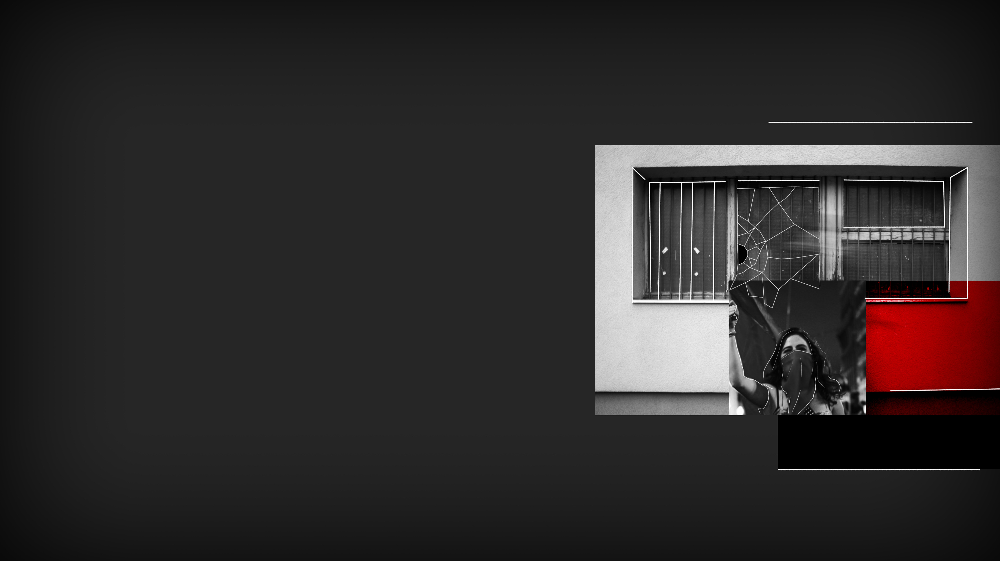

SPLITTED
SPLITTED

«Let's retreat. We need time to understand this an reorganize!» I shout to Lisa, who is hiding on the other side of the room behind a chair. She doesn't seem happy about the idea of leaving so early, but she has to agree with me.
«Let's go folks, let's head home!» She shouts through the gas.
We all follow her, running out of the room and towards the stairs. The men don't follow us, so after some floors of stairs we slow down our pace and take long breaths to recover from the tear gas.